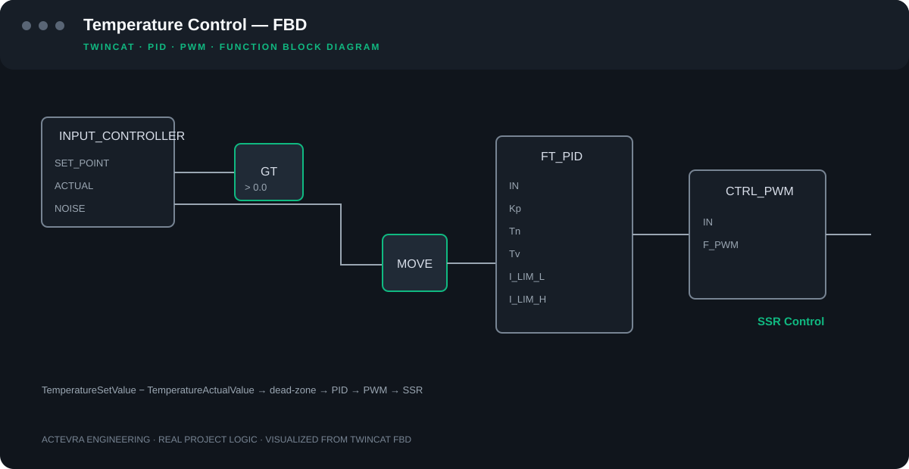

Otomasyon & PLC
Makine ve proses kontrolü, durum makinesi ve PackML yapıları, EtherCAT, sürücü entegrasyonu, reçete ve batch sekansları.
TwinCAT 3 · PackML · EtherCATENDÜSTRİYEL OTOMASYON & YAZILIM
PLC, SCADA, robotik, hareket kontrolü, fonksiyonel güvenlik ve elektrik tasarımını aynı sistemin parçaları olarak ele alıyoruz. Tasarımdan devreye almaya kadar sahada kullanılabilir, bakımı yapılabilir otomasyon sistemleri geliştiriyoruz.
Bizim için iyi otomasyon; yalnızca üretim yapan değil, arıza olduğunda nedenini gösteren, bakım sırasında anlaşılabilen ve yıllar sonra geliştirilebilen sistemdir.
Makine ve proses kontrolü, durum makinesi ve PackML yapıları, EtherCAT, sürücü entegrasyonu, reçete ve batch sekansları.
TwinCAT 3 · PackML · EtherCATOperatör ekranları, alarm ve trend yönetimi, üretim kayıtları, denetim izi, reçete, raporlama ve PLC veri entegrasyonu.
.NET / WPF · ADS · SQL · OPC UARobot hücreleri, servo eksenler, PLC–robot haberleşmesi, hareket dizileri ve devreye alma.
KUKA · ABB · Servo · CiA 402Elektrik şemaları, saha I/O tasarımı, güvenlik PLC'si, E-Stop, koruyucu kapı kilitleme, STO/SS1 ve güvenli duruş senaryoları.
EPLAN · Pilz · SICK · TwinSAFEEski ve yeni üretim sistemlerinden gelen proses verilerini; ADS, Modbus TCP/RTU, PROFINET, PROFIBUS, EtherNet/IP, DeviceNet, CANopen, OPC UA ve gerektiğinde endüstriyel edge gateway çözümleri üzerinden topluyor, normalize ediyor ve üst seviye sistemlere açıyoruz.
Her makineden alınan veriler zaman damgası, kaynak ve veri kalitesi bilgisiyle kaydedilebilir. Böylece bağımsız makinelerde gerçekleşen olaylar aynı zaman çizgisinde ilişkilendirilerek duruşların, mikro duruşların, çevrim sürelerinin, alarmların ve proses değişimlerinin sırası yeniden oluşturulabilir.
Toplanan veri mevcut SCADA, MES, SQL/historian, MQTT, raporlama ve analitik sistemlerine aktarılabilir. Amaç yalnızca PLC taglerini taşımak değil; örneğin bir hattın neden durduğunu, hangi makinenin önce durduğunu ve diğer duruşların bunun sonucu olup olmadığını tarihsel veriden inceleyebilecek ortak bir fabrika veri katmanı oluşturmaktır.
Reçete, batch, ekipman ve proses kontrolünü açık hiyerarşilerle ayıran; yeniden kullanılabilir ve izlenebilir kontrol yapıları tasarlıyoruz.
ISA-88 yaklaşımı · Reçete · Batch · Ekipman modeliRisk değerlendirmesinden türetilen güvenlik fonksiyonları için E-Stop, koruyucu kapı, guard locking, STO/SS1, güvenlik PLC'si ve güvenli duruş mimarilerini projeye uygun şekilde ele alıyoruz.
ISO 13849 · IEC 62061 · Pilz · SICK · TwinSAFEMakine ve proses ağlarında ağ segmentasyonu, zone & conduit yaklaşımı, kontrollü uzaktan erişim, kullanıcı/rol yönetimi, kayıt tutma, yedekleme ve erişim sınırlandırmasını tasarımın parçası olarak değerlendiriyoruz.
IEC 62443 yaklaşımı · Zones & Conduits · Least PrivilegeKullanıcı işlemleri, reçete revizyonları, batch geçmişi, denetim izi ve üretim kayıtlarını doğrulanabilir bir veri akışı içinde tasarlıyoruz.
Audit Trail · Recipe Versioning · Production HistoryMakine üreticileri için otomasyonu tekrar kullanılabilir, varyantlara uyarlanabilir ve sahada bakımı yapılabilir bir ürün altyapısı olarak ele alıyoruz. Projeye ait proses ve makine kontrol kodu dokümante edilmiş ve sürdürülebilir şekilde teslim edilir.

Reçete ve batch uygulamalarında yalnızca set değerlerini PLC'ye aktarmıyoruz. Parametre limitleri, reçete versiyonları, batch sonuçları, üretim geçmişi, alarm ve kilitleme bilgilerini birlikte ele alıyoruz.
Gerçek bir endüstriyel otomasyon uygulamasındaki TwinCAT sıcaklık kontrol yapısından seçilmiş FBD akışı; giriş dead-zone kontrolünü, PID regülasyonunu ve PWM üzerinden SSR kontrolünü birlikte gösterir.

PackML tabanlı kontrol yapısında durum geçişlerini, komut önceliklerini ve güvenlik kaynaklı duruşları merkezi bir geçiş mantığında topluyoruz. Böylece makine, alt sistem ve bileşen seviyelerinde çevrimiçi teşhis daha anlaşılır kalır.
Aşağıdaki bölüm, kendi TwinCAT 3 PLC kütüphanemizdeki gerçek PackML geçiş kodundan seçilmiştir.

Hammadde hazırlama, dozajlama, karıştırma, ekstrüzyon ve kurutma proseslerinin merkezi PLC + SCADA mimarisinde yönetimi.
Çift servo eksen, ürün transferi, itici mekanizma ve proses ölçümlerinin senkronize kontrolü.
Robotlar, görüntü işleme, fikstür yönetimi ve proses istasyonlarının PLC koordinasyonu.
Çok eksenli hareket, vakum, tank, pompa, valf ve sıcaklık kontrolünün tek çevrimde birleştirilmesi.
Benzer bir prosesiniz mi var?
Net durum makineleri.
Sekansın hangi durumda olduğu ve neden beklediği çevrimiçi olarak görülebilmeli.
Tek komut sahibi.
Aynı ekipmana farklı katmanların kontrolsüz şekilde komut vermesini önleyen açık komut sahipliği.
Teşhis önce gelir.
Kilitleme, haberleşme, güvenlik ve cihaz hataları birbirinden ayırt edilebilmeli.
Operatör için tasarım.
SCADA yalnızca PLC değişkenlerini göstermek yerine operatöre ne olduğunu anlatmalı.

Diğer notlar: Batch Geçmişi & Denetim İzi · Endüstriyel Etiket Ağ Geçidi